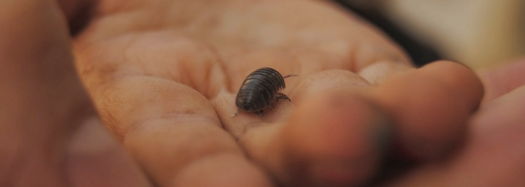

Intro
Kun Koro empezó ofreciendo asesoramiento orientado a equipos de comedor de escuelas públicas o privadas y proyectos de tiempo libre que quieran acercarse o profundizar en un acompañamiento respetuoso hacia las criaturas, las familias y el propio equipo.
Kun Koro significa "con corazón" en Esperanto. Para nosotros representa acompañar desde el corazón, desde un lugar sentido, desde las necesidades de las criaturas, el vínculo y el afecto.
Con el tiempo, ampliamos el proyecto para poder acoger a diferentes acompañamientos ofrecidos a escuelas por diferentes profesionales.